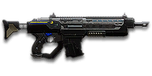

← Back to the Reaper DMR comparison
Sage Guide · New Conglomerate · Combat Medic
The hardest-hitting assault rifle a New Conglomerate Combat Medic can carry. Two-hundred-damage bullets, a three-headshot kill at any range, and a 24-round magazine that punishes waste.
Read this first — this gun is NOT a starter. The Reaper DMR costs 1,000 certs (or 699 Daybreak Cash). No faction is handed it for free. Your NC starter assault rifle is the NC1 Gauss Rifle — the Reaper is a purchase you make later, because you want the biggest bullet in the class, not a gun you start with.
The one-line verdict: a pocket Gauss SAW — the biggest bullet of any assault rifle, a 0.24-second headshot kill at any distance, and a kill time that stays 600 ms from 10 m all the way out. It rewards good aim and short bursts, and punishes spray-and-pray and missed shots more than any starter. Fight between 10 and 60 metres and it will carry you.

The Reaper DMR · New Conglomerate · 24-round magazine · 1,000 certs
Every section below folds shut — tap a heading to open it. Section 01 starts open, because it's the lesson that saves you the most deaths.
Picture the scene, because you've probably lived it: you're sprinting across a courtyard, an enemy appears, and you do everything at once — hold the trigger down while you're still running, then press aim-down-sights (ADS) a split-second later, finger still down. The sight picture snaps in, it looks precise… and your bullets spray everywhere except the man in your crosshair. He kills you. It feels like the game cheated. It didn't — here's what actually happened.
Sprinting is the least accurate state in the game: your cone starts at 7.0° — fully bloomed, the widest it can ever be — and every hipfire shot widens it further (+0.14° per shot). Pressing ADS mid-hold changes the picture, not the cone.
You started firing from a sprint, from the hip. Sprinting is the least accurate state in the game: your cone of fire starts at 7.0° — fully bloomed, the widest it can ever be. Every shot you fire from the hip widens it further still (+0.14° per shot).
Then you pressed ADS mid-hold — and nothing reset. Aiming down sights does not shrink a cone of fire that is already bloomed. The scope only gives you a precise picture; the bullets keep flying out of the wide cone you built while running and hipfiring. That's the whole mystery: accurate-looking aim, wildly inaccurate gun.
Two timers stack the deck further: your gun needs about 0.3 s to settle after a sprint, and raising the sight itself takes ~0.15 s. Trigger held through all of it means your first half-second of fire is pure confetti — and on this gun, with only 24 rounds and 120 ms between shots, four wasted rounds are a sixth of your magazine gone for nothing.
1 · Feet. Let go of sprint (and the trigger, if you're already holding it). Stop, or drop into a strafe — anything but a full sprint.
2 · Sight. Press ADS and let the sight come up. This takes a heartbeat — that's fine. You're a Combat Medic, not a Heavy Assault: you have no overshield to hide behind, so the half-second of patience is your defence. A clean first burst is worth more than a rushed spray.
3 · Trigger. Now fire. Starting from the aimed cone of 0.00°, your first shots land where the dot points, and you control the bloom from zero instead of inheriting a maxed-out cone.
Stop → aim → fire. If you take one habit from this entire page, take this one. You'll practise exactly this rhythm in the simulator in section 04.
Three beats, always in this order. Stop first so the cone can shrink, aim second so the sight is up before any bullet leaves, fire third from a cone that starts at 0.00° instead of 7.0°. The whole sequence costs about half a second — and on a gun whose bullets hit this hard, the first clean burst is usually the whole fight.
Every enemy infantry has 1,000 health (500 shield + 500 health). Your bullet does 200 damage up close, fading to 167 at long range — the hardest hit of any assault rifle. Headshots count double, leg shots count less (×0.9). Unlike the starters there are only two damage tiers to memorise, and the headshot count never changes:
| Range | Damage | Head | Chest | Legs | Chest vs shielded Heavy |
|---|---|---|---|---|---|
| Close · 0–10 m | 200 | 3 | 5 | 6 | 8 |
| Far · 10 m+ | 200→167 | 3 | 6 | 7 | 9 |
Perfect-accuracy times to kill: 3 headshots ≈ 0.24 s at any range, 5 chest shots ≈ 0.48 s up close and 6 chest shots ≈ 0.60 s past 10 m. Against a shielded Heavy Assault (1,450 health with the shield up) it's 4 headshots up close and 5 at range, or 8–9 to the chest. In real fights you'll land maybe half your rounds — still, this is why the head matters so much on this gun: three head hits end it at any distance, and no starter can beat that 0.24 s past 10 m.
Full power to 10 m, then a steady slide to minimum at 85 m. The gold line shows High Velocity Ammunition, which stretches minimum damage out to 105 m but starts full damage 2 m sooner.
One gun, four fighting styles. The right technique changes with distance — use the range finder below to see what your bullets do at any range, then learn the four bands underneath it.
How to fight hereAim down sights at the upper chest and neck. Fire in bursts of 5 — your recoil climbs straight up into the head for free damage.
Aim: centre of the chest, from the hip. Keep moving.
Scoping in costs you time and slows you down — at arm's length that gets you killed. But be honest with yourself: this gun's hipfire is loose for an assault rifle (2.5° standing, 3.0° moving), so keep it truly close, strafe side to side (A/D) while firing, and let your 200-damage bullets do in five hits what a starter needs seven for.
Aim: neck / upper chest. Bursts of 5 rounds.
This is where the gun earns its keep: near-full 200 damage, a 0.00° starting cone, and fast bullets (615 m/s). Start your crosshair at the neck — the natural straight-up climb walks your shots into the head, and 3 head hits end the fight in under a quarter of a second. Your home range as a Medic: close enough to reach your squad, far enough that the enemy's hipfire can't touch you.
Aim: chest. Bursts of 5 rounds, pause between them.
Damage is sliding toward 167 but you still only need 6 chest shots — and still only 3 to the head. Fire a burst, release for a split second to let accuracy reset, fire again. The recoil climbs straight up (0° angle, no sideways bias), so pull your mouse gently straight down — no sideways correction needed. Crouch or stand still when you can — both tighten your shots.
Aim: chest. Taps of 3–5 rounds at exposed targets.
At 167 damage you still need only 6 chest hits — your kill time doesn't get any worse past 85 m, while other assault rifles' kill times keep getting worse with range. Take these shots at stationary or fleeing targets, medics reviving, and engineers on turrets. Your bullets are fast (615 m/s) and your headshot kill is still 0.24 s. This is the one assault rifle that genuinely owns long range.
Your accuracy is decided by two things before skill even enters it: what your body is doing (your stance sets the starting cone of fire) and what your finger is doing (holding the trigger grows that cone with every shot). The Reaper DMR has no fire-mode switch — full-auto only — so "firing modes" are something you do with your finger, not a setting on the gun.
| Stance | Starting cone | What it means for you |
|---|---|---|
| Sprinting | 7.0° | Maxed out — the widest the cone can be. This is the section 01 disaster: never start firing from a sprint. |
| Hipfire, moving | 3.0° | Walking or strafing from the hip. Fine inside ~8 m, leaks rounds past the target beyond it. |
| Hipfire, standing | 2.5° | Your point-blank default. The 0.35 m ring at 8 m in section 05 is this stance drawn out — workable, but every starter hipfires tighter than you do. |
| Hipfire, crouched | 2.0° | The tightest hipfire you have (2.5° if you crouch-walk). Crouch when holding a doorway from the hip. |
| Aimed (ADS), feet planted | 0.00° | Standing or crouched still makes no difference here — a perfect point, not a cone at all, until the first shot's bloom. Crouch-walking while aimed is 0.17°. This is why section 01's order matters. |
| Aimed (ADS), strafing | 0.32° | That is the moving floor — the cone you start from while strafing aimed, before bloom adds 0.07° per shot. You move at 0.5× speed while aiming, same as every starter, so strafe between bursts to break their aim, not during them. |
| Mode | How your finger does it | Use it at |
|---|---|---|
| The mag dump | Hold the trigger and don't let go | Point blank only, or suppressing a doorway. Bloom maxes out fast — past ~8 rounds you're spraying, not aiming — and with 24 rounds you've just spent a third of your magazine. |
| Bursts — the default | Hold for 5 rounds, release ~0.15 s, hold again. 6–8 rounds is fine while you're learning | Almost everything, 8–85 m. Each release resets the cone, so every burst starts at 0.00°. The cone grows by 0.07° with every shot from the very first one — there are no free shots, so the release is what keeps you accurate. |
| Tap-fire | Short taps of 3–5, or single clicks, with a real pause between | 85 m and out, at exposed or stationary targets. Slow, but every round goes where the dot is — and your 3-headshot kill still only takes 0.24 s. |
A target 30 m away, aiming down sights. Press and hold FIRE (mouse, touch, or hold Space with the button focused) and watch the holes walk wider the longer you hold — that's firing from an ever-growing cone. Release, let the cone reset, fire again. Aim for bursts of 5; 6–8 is tolerable while you're new. This practice window is shared by the whole Sage series: it's driven by a weapon profile plugged into the window — here the Reaper DMR's (500 RPM, 0.00° starting cone, 0.07° bloom per shot, target at 30 m) — and the spread is drawn at true scale from those numbers. Note the cone grows from the very first shot: there is no free window where the bullets stay perfectly grouped.
Cone of fire — fills as you hold, empties when you release.
Your bursts will be graded here — green at 5 rounds, tolerable up to 8.
Some things are easier to show than to say. Here's what your bullets actually do: how wide hipfire spreads at 8 metres, what a good burst rhythm looks like, and what the 2x sight really changes. The hands-on version — holding the trigger yourself — is the practice window in section 04.
A full-size target 8 m away — an arm's-length room fight. The rings show where hipfire rounds land around your aim point (the chest). Sizes are drawn to scale from the gun's real cone-of-fire numbers.
Read it this way: standing still, the 0.35 m ring sits inside the chest — most rounds hit a target this size, which is why hipfire works point-blank. But move and it grows to 0.42 m — nearly as wide as the torso — so the edge rounds start leaking past him, and the rings only grow with distance while the man doesn't. Crouching tightens the ring to about 0.28 m (2.0°). Past ~10 m that's rounds missing entirely: the exact moment to switch to aiming down sights, where the spread shrinks to a dot. (Ring sizes use the real geometry: spread diameter = 2 × distance × tan(cone ÷ 2).)
Every shot widens your cone of fire ("bloom"). Releasing the trigger for a heartbeat resets it. Same 15 rounds, two very different outcomes:
The target pattern is bursts of about 5 rounds — that's the ideal. Bursts of 6–8 are fine while you're new (call it newbie tolerance). Past that, the bloom (0.07° per shot aimed, 0.14° from the hip) keeps growing with every shot from the very first one, so the extra bullets mostly decorate the wall behind your enemy instead of hitting him. Short bursts also leave you rounds for the second enemy — remember, the magazine is only 24, and a 15-round spray is more than half of it gone.
No zoom. The target at 35 m is small but the view is wide open — you see the crate, the tower, and the next enemy coming. Fast to aim, nothing blocks your edges. Best inside ~40 m.
Same target, same 35 m — but he looks twice as tall, so placing shots on his chest and head gets much easier. The price: your view narrows to the round window, the crate and tower are gone, and close targets feel fast and huge. Best at 25–60 m — this gun's home ground.
That's the whole 30-cert decision from section 06 in one picture: 1x for awareness, 2x for precision. Most veterans carry both and swap per base — indoors 1x, open ground 2x.
Two things to know before you spend a single cert. First, this gun comes bare — iron sights, no rail attachment, no barrel attachment. Nothing is free here except the gun you already paid 1,000 certs for. Second, two things don't exist for this gun at all: no Soft Point Ammunition, and no Flash Suppressor. Don't go looking for them — the ammo slot holds High Velocity and Sabot instead, and your long-range game is already the best of the assault rifles without any help.
The plain NC iron sights the gun ships with. Usable, but the posts are chunky and they crowd the target at range.
Good: your first fights while you save 30 certs — it costs nothing and works.
Bad: anything past 30 m, where the posts hide the chest you're aiming at.
A clean illuminated red-dot sight with no zoom. Your default once you can afford it, and your best all-round option indoors.
Good: everywhere indoors and out to ~40 m — which is most PlanetSide fights.
Bad: picking out targets past 50 m; that's what the 2x is for.
Doubles your view magnification. Costs almost nothing — the price of one kill or two.
Good: open-field bases, tower fights, and your 25–60 m burst game — this gun's home ground. Swap between 1x and 2x per fight.
Bad: tight indoor rooms — the zoom makes close targets feel fast and huge.
Night-vision sight: enemies glow white against a dark view, and it sees through smoke.
Good: night fights, smoky doorways, spotting infiltrators by their outline.
Bad: daytime and long range — its view is short-ranged and washes out in bright light.
LX Tacti-Eye / LACO (3.4x), TrueShot / LX Mark IV (4x) and the BDS (6x) — sniper-style magnification on an automatic rifle.
Good: almost nothing a beginner does — recoil magnifies too, and tunnels your vision.
Bad: any fight inside 40 m, which is where you'll spend your first hundred hours. The 2x already covers this gun's range.
Nothing wrong with an empty barrel slot on this gun — no attachment here changes your damage, and the recoil is manageable once you learn the pull-down.
Good: your first weeks. Spend certs on your Medic tool and suit first.
Bad: nothing — there's no downside to an empty slot.
Cuts vertical recoil by 30% (0.44° down to about 0.31° per shot). Costs you: hipfire spread grows 15%, and enemies see you on the minimap from 35 m farther away when you fire.
Good: if you mostly aim down sights at mid-range and the upward climb bothers you — this gun kicks harder per shot than any starter.
Bad: hipfire builds and sneaky play — you get louder on the map and sloppier from the hip.
Hipfire bloom grows 40% slower (0.14° down to about 0.08° per shot) — much steadier hip spraying. But vertical recoil rises 20% when you do aim (0.44° up to about 0.53°).
Good: a dedicated close-quarters build paired with the Laser Sight.
Bad: general play — it taxes the aimed shooting you'll do most, on a gun that already climbs hard.
You vanish from the minimap when firing and your shots are quiet. In exchange, damage starts dropping off 20 m sooner (minimum damage at 65 m instead of 85 m) and bullets fly 15% slower (615 → about 523 m/s) — harder to lead moving targets.
Good: flanking behind enemy lines, rooftop and tree work, solo play behind the front.
Bad: front-line fighting where everyone already knows where you are — you pay the range cost for stealth you don't need, on a gun whose range is its best feature.
Cuts side-to-side recoil by 25% (0.20° down to 0.15°), keeping your bursts on a single target. Tiny cost: weapon swap is 0.15 s slower.
Good: the default for aimed, mid-range play. Your recoil is already straight up with no sideways bias — the grip keeps it that way.
Bad: nothing meaningful. It only stops helping if you never aim down sights.
Cuts the vertical recoil of the first shot in a burst by 60% — and the first shot kicks 1.5× as hard as the rest, so this tames the worst kick in every burst. Costs you: side-to-side recoil rises 10% (0.20° up to 0.22°).
Good: if you live in 5-round bursts (you should) — every burst starts flatter, and your first shot is the one that decides the duel.
Bad: mag dumps and long holds, where the first-shot bonus is one kick among many and the extra sideways walk shows up.
Five more rounds per magazine (24 → 29) — one extra kill per mag at close range. Costs you: the weapon takes 15% longer to equip and unequip (780 ms up to about 897 ms).
Good: almost always — this gun's 24-round magazine is its sharpest weakness, and 29 rounds buys you a whole extra kill before the reload.
Bad: if you swap weapons constantly mid-fight — the slower equip punishes that habit. (Don't swap mid-fight anyway; see section 09.)
Hipfire accuracy improves by a third (33% tighter cone). Replaces the Forward Grip, the Angled Grip and the Extended Magazine — you can't have two rail attachments.
Good: indoor point-holds and stairwell fights where you hipfire inside 8 m.
Bad: open bases — you give up aimed recoil control (or five extra rounds) for a bonus you rarely use.
A single-shot shotgun under the barrel — one very loud answer to someone who rounds the corner at arm's length. Toggle it with the Gear Slot 1 key; the gun takes 0.25 s longer to equip.
Good: point rooms and stairwells, as a panic button for the range where this rifle is weakest.
Bad: as your everyday rail — one shot, then a long reload of the attachment, and you've given up the grip or the extra five rounds for it.
An underbarrel smoke grenade launcher — lob smoke to cover a revive or a retreat. Toggle it with the Gear Slot 1 key; the gun takes 0.25 s longer to equip.
Good: a Medic covering a revive in the open — smoke on the doorway, then get your squadmate up behind it.
Bad: as your everyday rail — it's a tool for your job, not a damage upgrade, and it costs you the grip or the magazine.
A torch whose beam reveals cloaked infiltrators. Toggle it with the attachment key (X by default).
Good: hunting a stalker infiltrator camping your capture point — sweep corners with it.
Bad: as your everyday rail — it gives zero accuracy help, and the beam advertises your position.
Bullets fly 10% faster (615 → about 677 m/s) and minimum damage now holds out to 105 m instead of 85 m — but full damage ends 2 m sooner (10 m → 8 m).
Good: open-field fights at 40 m and out, where the faster bullet means less lead on moving targets and your 6-shot kill stretches even farther.
Bad: close work — you shave 2 m off your best damage band for speed you don't need indoors.
In plain words: your bullet goes through the first enemy it hits and keeps flying into whoever is standing behind him — one extra body, then the bullet stops. It does not hit any harder; it just doesn't stop at the first man. The price is real: your fire rate drops 10% (500 → 450 RPM), so a 5-shot kill takes about 533 ms instead of 480 ms, and a 6-shot kill about 667 ms instead of 600 ms.
Good: doorways, capture-point rooms and revive trains — anywhere enemies queue up in a line. One burst can wound two men, and the second man never saw it coming.
Bad: a fair 1v1 duel in the open, where nobody stands behind your target and you're just paying 10% fire rate for nothing. Take it off for duels; put it on for doorways.
Costs below are attachments only — the gun itself is 1,000 certs on top of all of them, so even the "0 certs" build assumes you've already bought it.
0 certs attachments · Just bought the gun
What the 1,000 certs actually buy you. Genuinely usable — learn the gun on this before spending anything more.
230 certs attachments · Recommended
The best value in this whole guide. Covers every fight from a doorway to a tower courtyard — with the Extended Magazine swapped in for the grip when you want 29 rounds instead.
330 certs attachments · Indoor brawler
Built to hipfire down stairwells and hold a capture point room — and Sabot turns a doorway queue into two casualties per burst. Swap back to the All-Rounder outdoors.
330 certs attachments · Long lane
The designated-marksman build this gun's name promises: flat first shots, fast bullets, and a 3-headshot kill that never fades with range. Hold lanes at 40–85 m and let the starters come to you.
Headshots deal double damage: 3 kills at any range versus 5–6 to the chest. Don't aim at the head directly — aim at the neck and let the gun's natural straight-up climb carry shots two and three into the skull. It's the single biggest damage upgrade you own, and it's free. At 0.24 s for three heads, no starter out-kills you past 10 m.
Every shot widens your cone of fire by 0.07° aimed, from the very first shot. Holding the trigger past ~8 rounds at range means later bullets fly around your target, not into it. Five rounds is the ideal burst; release the trigger for a heartbeat between bursts — your accuracy resets and your hits per magazine roughly double. With only 24 rounds, you can't afford to decorate the wall.
Reloading with even 1 bullet left takes 1.925 s; an empty gun takes 2.565 s. That extra 0.64 s is the biggest empty-reload penalty of any rifle on this page — more than half a second standing defenceless. Count roughly: after three kills or ~18 rounds, duck behind cover and reload early. Treat the last 6 rounds as your emergency reserve, not your working magazine.
Walk with your crosshair at head height, pointed where an enemy's head will appear — a doorway edge, a corner, stairs. Most beginners lose fights in the half-second spent dragging the crosshair onto target. And you move at 0.5× while aiming, same as everyone else — so peek, fire your burst, and break line of sight instead of standing in the open trading shots.
Your damage, accuracy and bullet speed all shine at 10–60 m, and your kill time doesn't fade past 85 m while theirs does. Sprint between cover, use buildings and rocks as stepping stones, and arrive at your range before opening fire. The player who chooses the range usually wins the duel — make it you. Never chase a fight into arm's length if you can help it: that's where the 750 RPM guns live.
You're a Combat Medic, and the revive is your job — but a dead medic revives nobody. When a room is hot, the Reaper comes first and the Medical Applicator second: kill the threat, then get your squadmate up. Your rifle takes 780 ms to bring out and your tool takes time to swap to as well, so never switch mid-duel — finish the fight with the gun in your hands.
Every gun has a price. Here's where the Reaper DMR pays — and the habit that covers each hole.
The starter rifles carry 30–40 rounds. Your 24 rounds are four kills at best (five shots each up close, six past 10 m), and a sprayed burst can leave you dry mid-fight. The Extended Magazine only adds five.
Play around it: burst discipline (habit 2) and early reloads (habit 3). Your 1.925 s short reload is the second-fastest here — reloading often is the design, not a failure.
At 500 RPM there are 120 ms between your shots — a slow fire rate for an assault rifle, and one of the slowest in the class. Every miss costs you a full 120 ms of kill time, and two misses in a duel hand it to the enemy. Your damage per second is 1,667 up close and 1,392 at range — strong on paper, but only if the bullets land.
Play around it: aim first, then fire (section 01), and burst in fives. This gun forgives a bad position; it does not forgive bad aim.
0.44° of climb per shot, with the first shot kicking 1.5× as hard — very strong vertical recoil for an assault rifle. In a long burst your aim walks straight off the top of the target's head — you'll see this clearly in the VR drill below.
Play around it: pull your mouse straight down while firing — the recoil angle is 0°, so there's no sideways correction to learn. The climb recovers at 15°/s once you've stopped firing for 120 ms, so the release between bursts does double duty: it resets the cone and lets the recoil settle. The Compensator cuts the climb 30% and the Angled Forward Grip tames the first-shot kick by 60%.
2.5° standing and 3.0° moving from the hip — wide for an assault rifle (the starter rifles sit at 2.0° standing). A hipfire duel under 10 m against a fast-firing rifle is a fight you're built to lose.
Play around it: keep your distance (habit 5), ADS even at 10 m, and if someone does close on you, backpedal while hipfiring rather than standing still — or let the Underbarrel Shotgun answer for you.
It takes 780 ms to equip — the starters take 650 ms — and an empty reload is 2.565 s against a 1.925 s short reload. Swapping to your pistol or your Medical Applicator mid-fight, or running the magazine dry, leaves you defenceless for the better part of a second.
Play around it: reload early and only in cover (habit 3), and decide which tool is in your hands before the fight starts, not during it.
A thousand certs buys a lot of Medical Applicator ranks, suit slots and abilities. Up close, your 480 ms kill time is only as fast as the free starter rifles can already manage, and at mid-range the fastest of them beats you by 40 ms. What you're buying is the headshot kill that never fades and the best far-range kill time of any assault rifle here.
Play around it: buy it for the range and the heads — the 0.24 s three-headshot kill at any distance — and only after your Medic tool and suit are in decent shape. If you mostly fight inside 10 m, the free NC1 Gauss Rifle is the better buy.
Open the world map, travel to VR Training, and run these on the target dummies. Five minutes before a play session beats an hour of dying confused.
Aim at a wall 20 m away and empty a full magazine without touching the mouse. Watch the bullet pattern climb straight up — that's your gun's fingerprint: a 0° angle, no sideways drift at all. Repeat, this time pulling straight down, until the group stays fist-sized.
Walk the dummy range keeping your crosshair glued to neck height the whole time, snapping to each new target without dipping to the floor or sky. Slow and clean first; speed comes on its own. Three headshots is the whole gun — make the neck your default.
At 30–40 m, kill dummies with bursts of 5, releasing the trigger fully between bursts. If a burst goes wide, shorten it. Goal: whole kills without a single wild round. Count your magazine while you do it — 24 rounds is four kills at best, so every wild round is a quarter of a kill thrown away.
Stand behind a pillar 15–25 m from a dummy. Step out, stop, ADS, fire one 5-round burst, step back behind cover. Repeat until stop → aim → fire is one motion instead of three decisions. This is the rhythm that keeps a 0.5×-speed Medic alive: you never stand in the open trading shots.
Fire exactly 18 rounds, step behind a pillar, reload, repeat. Train your hands to reload early and only in cover until it's automatic — in real fights you'll do it without thinking, which is the point. Remember: a short reload is 1.925 s and an empty one is 2.565 s, so the last 6 rounds are your emergency reserve, not your working magazine.